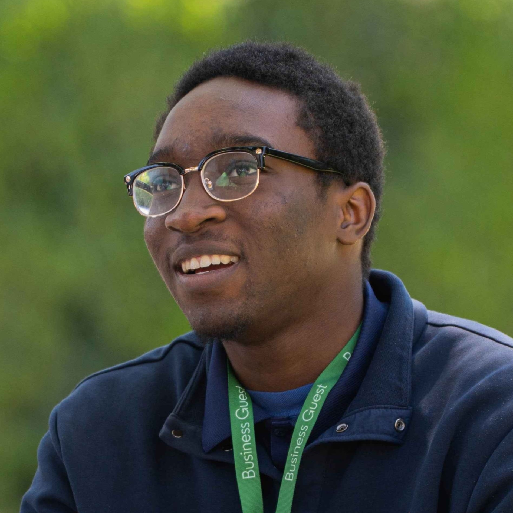
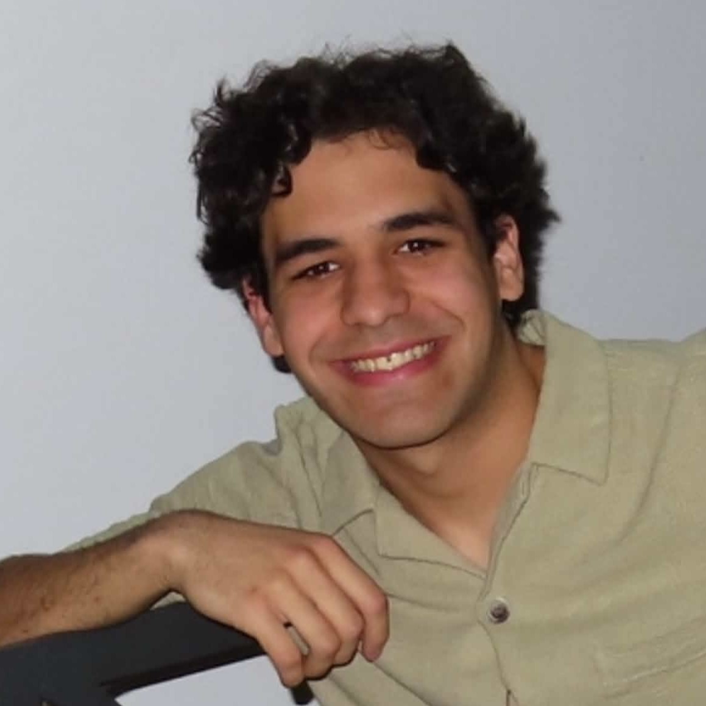
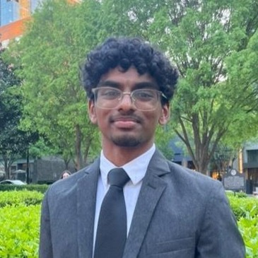
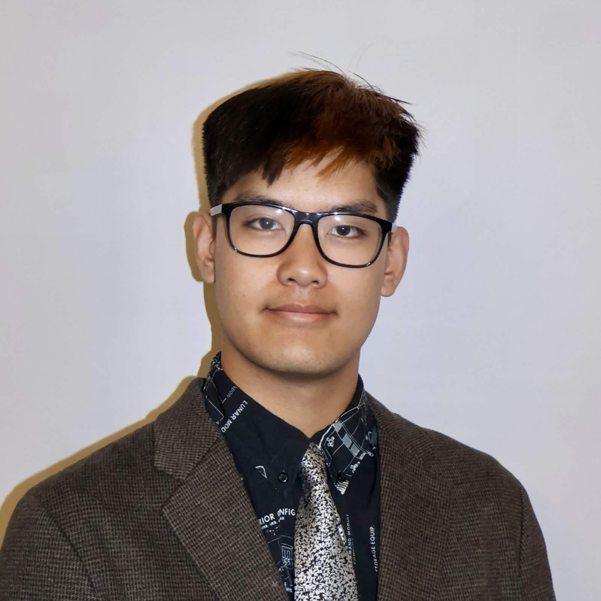
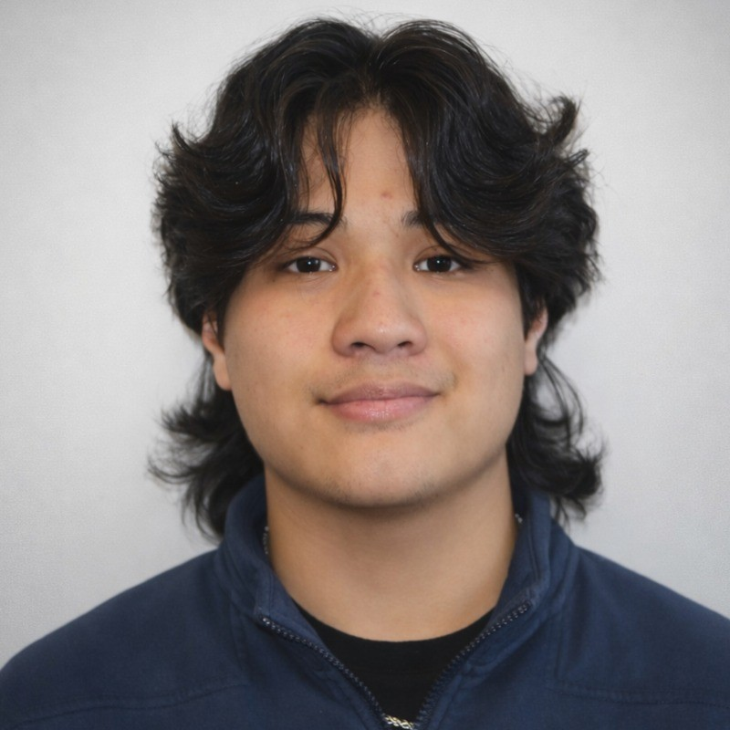
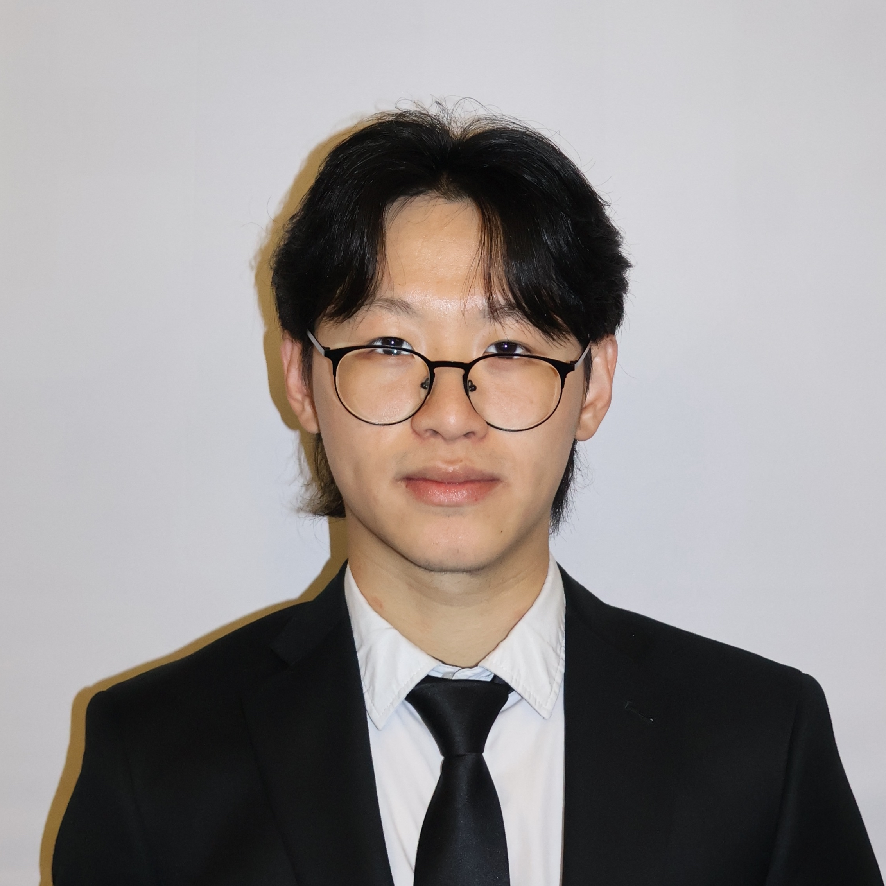
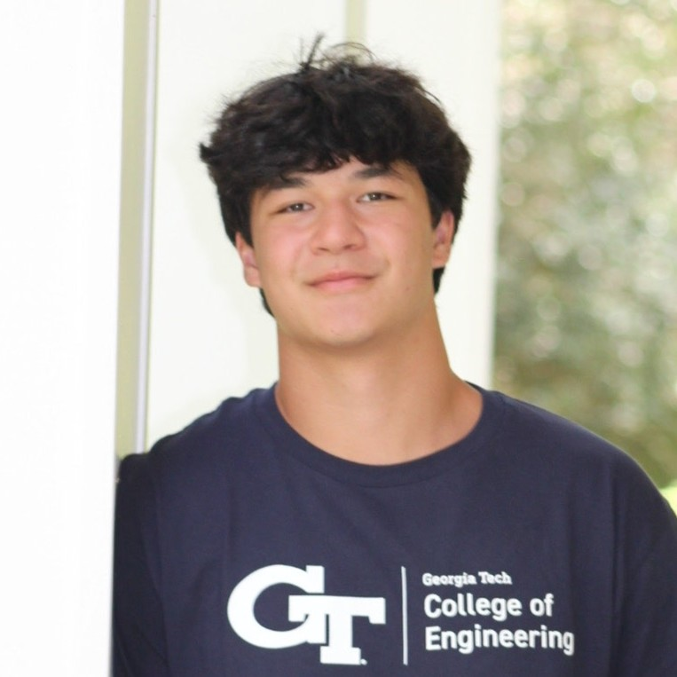
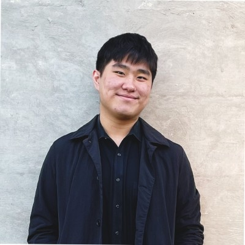
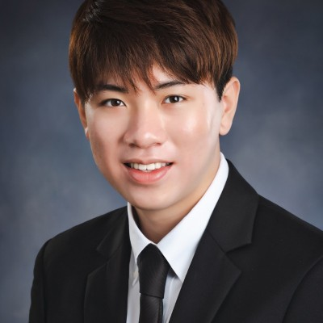

The Team Behind GTPL
A small group of people tackling a few of the world's biggest problems.
Our Leadership Team

Baldwin Chen
Founder & Project Lead
Baldwin is a 3rd-year aerospace engineering major from Tainan, Taiwan. As the Project Lead, he oversees the entire operation from managing subteams to sorting logistics. He was an intern at the Taiwanese Advanced Rocket Research Center (ARRC) for 4 years and another 2 years at the Taiwan Space Agency (TASA).

Anyi Lin
Guidance, Navigation, and Controls Lead
Anyi is a 3rd-year computer science major from Athens, Georgia. He serves as the GNC lead, managing the design and implementation of algorithms involving sensor fusion and navigation of the UAV. Beyond the club, Anyi was a Software Engineering Intern at Cisco and United States Air Force Research Laboratory.

Jack Rumpf
Structures Lead
Jack is a 3rd-year Mechanical Engineering student at Georgia Tech. As Structures Lead, he oversees structural design and analysis across all projects. He is also a co-founder of AerLock where he helped develop a cross-platform cybersecurity platform. Jack has prior industry experience at ABB and Savannah River Mission Completion. Past summer, he was also a Test and Evaluation Intern at Northrop Grumman.

Michael Swoyer
Propulsion Lead
Michael is a 4th-year aerospace engineering major from San Antonio, Texas (Go Spurs). As Propulsion lead, Michael coordinates tests, oversees the design of the engine and feed system, and engages team members. Michael loves asking questions and helping people answer theirs, and when not working on GTPL he enjoys playing basketball and eating cheeseburgers.

Herris Fentress
Finance & Operations Lead
Herris is a 2nd-year aerospace engineering major from Sandy Springs. As the Administrative Lead, he oversees the day-to-day operations, finances, and logistics for Propulsive Landers. In his free time, he likes making music, playing video games, and hanging out with friends.

Suhaila Rashid
Avionics Lead
Suhaila is a 3rd-year electrical engineering major from Augusta, Georgia. As one of the Avionics leads, she oversees hardware integration and testing, PCB design, and human Resources (she does not). Outside of GTPL, she enjoys quilting and hanging out with her car Germ.
Vice Leads

Favour Adekola
GNC Vice Lead
Favour is a 3rd-year computer science major from Loganville, Georgia. As the GNC vice-lead, besides being the funniest lead, he helps with managing the design and implementation of algorithms involving guidance, navigation, and control for our rockets. In his free time, Favour enjoys aurafarming, playing games, and drawing.

Udita Mahajan
Avionics Vice Lead
Udita is a 3rd-year electrical engineering major from Santa Clara, California. As one of the Electronics leads, she helps oversee the design and operation of hardware components. She has previously been a Lab Teaching Assistant at 49ers STEM Leadership Institute. Outside of GTPL, she enjoys hiking and playing tennis and basketball.

Matthew Xu
Engine Development Lead
Matthew is a 3rd-year aerospace engineering major from Upton, Massachusetts at Georgia Tech. He is a co-lead for the engine development team and helps lead the progression of testbed engines and main engine design. Outside of GTPL, he is a part of the sailing race team at Georgia Tech, loves to workout, and loves to run.

Yanquiel Bosques
Propulsion Vice Lead
Yanquiel is a 3rd-year aerospace engineering major from Miami, Florida. As a Propulsion Vice Lead, he manages the design, testing, and analysis of the rocket injector. His favorite part of GTPL is testing, and he loves climbing and playing video games in his free time.

Evin Jerry
Propulsion Vice Lead
Evin is a 3rd-year aerospace engineering major from Grimes, Iowa. As a Propulsion Vice Lead, he leads development and analysis of the Main Throttle Valve, as well as the GSE for GTPL's lander vehicle. Outside the club, he enjoys playing soccer, hiking, and chicken dum biryani.

Lele Qian
Propulsion Testing Lead
Lele is a 3rd-year mechanical engineering major from Joplin, Missouri. He is the Propulsion Testing Lead and works on developing hotfire procedures, documenting P&ID changes, and deciding failure protocols. When not working with GTPL, Lele enjoys cooking, tennis, and gaming.

Alexis Alfonseca
Structures Vice Lead
Alexis is a 3rd-year mechanical engineering major from Duluth, Georgia. As the Structures Co-Lead, he oversees the development of essential structural elements on all of the projects. He previously interned at Siemens and has experience in 3D printing and injection molding. Outside of GTPL, he spends his time playing ultimate frisbee and raising livestock.

Ben Virtucio
Structures Vice Lead
Ben is a 4th-year mechanical engineering major from Duluth, Georgia. As a Structures Vice Lead, he assists in overseeing the development of structural aspects of the lander frame as well as assisting other subteam members. He is also involved with GT's Symbiotic and Augmented Intelligence Laboratory. Outside of GTPL, he loves fishing, playing the guitar, and hanging out with friends.

Yoyi Xie
Simulations Lead
Yoyi is a 3rd-year mechanical engineering major from Athens, Georgia. He serves as a structures Vice-Lead. He has experience in robotics, mechanical design, programming, and developing startups. Outside of GTPL, he enjoys spending time with friends and working on personal projects.

Kaylin Wu
Structures Vice Lead
Kaylin is a 2nd-year aerospace engineer from Douglasville, Georgia. On the structures team, Kaylin helps lead simulation and the design of the retractable landing gear. In his free time, he enjoys playing tennis and reading novels.

Craig Falzone
Structures Vice Lead
Craig is a 2nd-year mechanical engineer from Santa Rosa Beach, Florida. On the structures team, he has worked on thrust vectoring methods and designs for the 1000 N and 2000 N engines. Outside of GTPL, Craig enjoys hanging out with friends, being on the water, and playing spikeball.

Mia Carlton
FinOps / Social Media Manager
Mia is a 3rd-year chemical & biomolecular engineering major from Atlanta, Georgia. She manages GTPL's social medias: designing, editing, and captioning posts across multiple platforms. When not behind the camera, she loves running over curbs and beating anyi at the linkedin mini games.
Past Leads

Matthew Lai
Marketing Lead
Matthew was the Marketing Lead in Spring '24, and is currently a Data Engineering intern at Cisco.

Gene Chang
Marketing Lead
Gene was the Marketing Lead in Fall '24. He is now a multi-time Software Developer Intern at IBM.

Mihir Dasgupta
Avionics Lead
Mihir was the Avionics Lead from Fall '24 - Spring '24, and was a Product Engineering Intern at Analog Devices.

Aaron Wong
Propulsion Subteam Lead
Aaron was the Propulsion Subteam Lead from Fall '24 - Spring '25, and was an intern at Gulfstream.

Hanming Sun
Finance & Operations Lead
Hanming was the Finance & Operations Lead from Fall '24 - Fall '25, and was an Operations Intern at Amazon before heading to Tesla as a Supply Chain Intern.